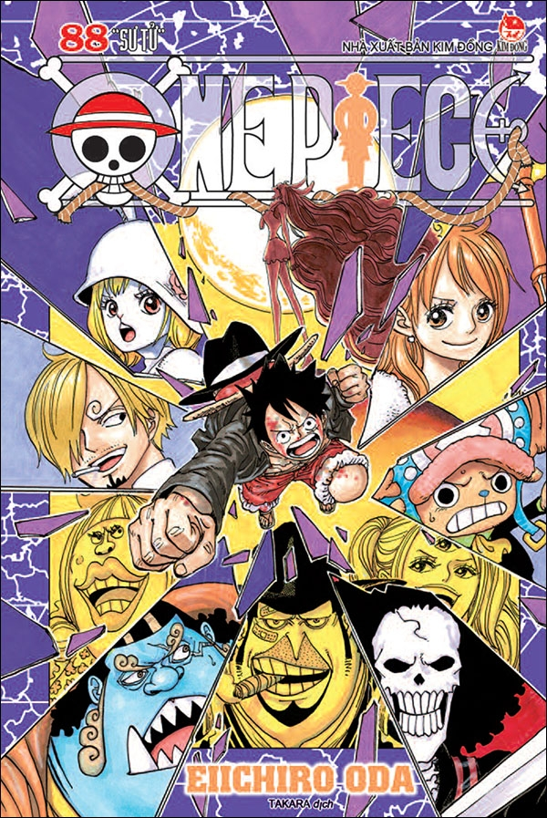
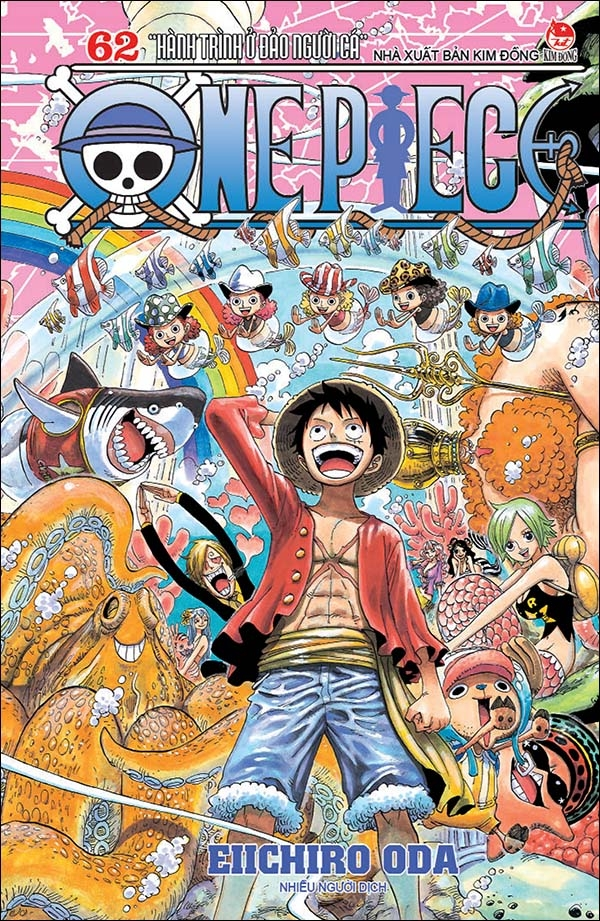
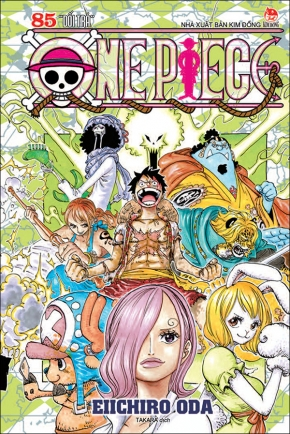

Chúc Bạn Xem Phim Vui Vẻ
Cung Cấp Phim One Pice Chọn Bộ Sắc Net
Đây Là Trang Film Đã Mua Bản Quyền Của nhà Tác Giả. Cấm Copy Dưới Mọi Hình Thức
Cốt Truyện
Câu truyện bắt đầu với cảnh xử tử của Vua Hải Tặc (海賊王 Kaizokuō?) Gol D. Roger. Ngay trước khi chết, Roger tiết lộ rằng kho báu của ông ta để hết ở ngoài biển ấy nếu ai tìm được sẽ là của kẻ đó. Và thế là những người có máu phiêu lưu và những kẻ tham vọng đều đổ xô ra biển tìm kiếm kho báu vĩ đại nhất, One Piece (ひとつなぎの大秘宝 ワンピース Wan Pīsu?). Kỉ nguyên Đại hải tặc (大海賊時代 Dai Kaizoku Jidai?) bắt đầu. One Piece cũng được chuyển thể sang một vài loại hình truyền thông khác. Một OVA được hãng Production I.G sản xuất vào năm 1998. Tiếp đó, phiên bản anime dài tập do hãng Toei Animation thực hiện, bắt đầu lên sóng truyền hình Nhật Bản vào năm 1999. Toei cũng sản xuất 11 phim hoạt hình, một OVA, và 5 chương trình truyền hình đặc biệt liên quan. Một vài công ty đã phát triển nhiều sản phẩm khác dựa vào truyện như thẻ game, video game. Bộ manga phiên bản tiếng Anh được cấp phép cho hãng Viz Media phát hành ở thị trường Bắc Mỹ, hãng Gollancz Manga ở Vương quốc Anh, Madman Entertainment ở Australia và New Zealand. Ở Bắc Mỹ, bộ anime được cấp phép bản địa hóa và phân phối bằng tiếng Anh bởi hãng Funimation Entertainment.
Luffy & Đồng Bọn
Câu truyện bắt đầu với cảnh xử tử của Vua Hải Tặc (海賊王 Kaizokuō?) Gol D. Roger. Ngay trước khi chết, Roger tiết lộ rằng kho báu của ông ta để hết ở ngoài biển ấy nếu ai tìm được sẽ là của kẻ đó. Và thế là những người có máu phiêu lưu và những kẻ tham vọng đều đổ xô ra biển tìm kiếm kho báu vĩ đại nhất, One Piece (ひとつなぎの大秘宝 ワンピース Wan Pīsu?). Kỉ nguyên Đại hải tặc (大海賊時代 Dai Kaizoku Jidai?) bắt đầu. One Piece cũng được chuyển thể sang một vài loại hình truyền thông khác. Một OVA được hãng Production I.G sản xuất vào năm 1998. Tiếp đó, phiên bản anime dài tập do hãng Toei Animation thực hiện, bắt đầu lên sóng truyền hình Nhật Bản vào năm 1999. Toei cũng sản xuất 11 phim hoạt hình, một OVA, và 5 chương trình truyền hình đặc biệt liên quan. Một vài công ty đã phát triển nhiều sản phẩm khác dựa vào truyện như thẻ game, video game. Bộ manga phiên bản tiếng Anh được cấp phép cho hãng Viz Media phát hành ở thị trường Bắc Mỹ, hãng Gollancz Manga ở Vương quốc Anh, Madman Entertainment ở Australia và New Zealand. Ở Bắc Mỹ, bộ anime được cấp phép bản địa hóa và phân phối bằng tiếng Anh bởi hãng Funimation Entertainment.
Chặng Đường
Câu truyện bắt đầu với cảnh xử tử của Vua Hải Tặc (海賊王 Kaizokuō?) Gol D. Roger. Ngay trước khi chết, Roger tiết lộ rằng kho báu của ông ta để hết ở ngoài biển ấy nếu ai tìm được sẽ là của kẻ đó. Và thế là những người có máu phiêu lưu và những kẻ tham vọng đều đổ xô ra biển tìm kiếm kho báu vĩ đại nhất, One Piece (ひとつなぎの大秘宝 ワンピース Wan Pīsu?). Kỉ nguyên Đại hải tặc (大海賊時代 Dai Kaizoku Jidai?) bắt đầu. One Piece cũng được chuyển thể sang một vài loại hình truyền thông khác. Một OVA được hãng Production I.G sản xuất vào năm 1998. Tiếp đó, phiên bản anime dài tập do hãng Toei Animation thực hiện, bắt đầu lên sóng truyền hình Nhật Bản vào năm 1999. Toei cũng sản xuất 11 phim hoạt hình, một OVA, và 5 chương trình truyền hình đặc biệt liên quan. Một vài công ty đã phát triển nhiều sản phẩm khác dựa vào truyện như thẻ game, video game. Bộ manga phiên bản tiếng Anh được cấp phép cho hãng Viz Media phát hành ở thị trường Bắc Mỹ, hãng Gollancz Manga ở Vương quốc Anh, Madman Entertainment ở Australia và New Zealand. Ở Bắc Mỹ, bộ anime được cấp phép bản địa hóa và phân phối bằng tiếng Anh bởi hãng Funimation Entertainment.